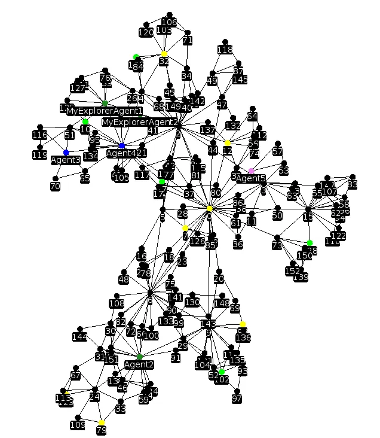

Real projects solving real problems with AI and machine learning. From research to production, here's what I've been building.
An innovative learning solution leveraging Large Language Models (LLMs) to personalize learning pathways for competitive exam preparation. Integrated advanced natural language understanding, adaptive learning models, and intelligent scheduling systems.
Watch DemoA collection of AI/ML projects spanning multiple domains and technologies.
Advanced AI training pipelines incorporating human feedback to align systems with ethical standards and values.

Leveraging multi-agent frameworks to refine language model performance through collaboration and contextual optimization.
Revolutionized generative AI by integrating real-time knowledge retrieval for contextually rich and accurate responses.
Developed a predictive model to analyze the success of SpaceX Falcon 9 rocket landings using historical data and machine learning techniques.
Developed an ML-based solution to analyze car attributes and predict CO2 emissions, fostering sustainable transportation strategies.
Designed an intelligent interface combining automatic natural language processing to generate precise, context-aware notes from YouTube videos.